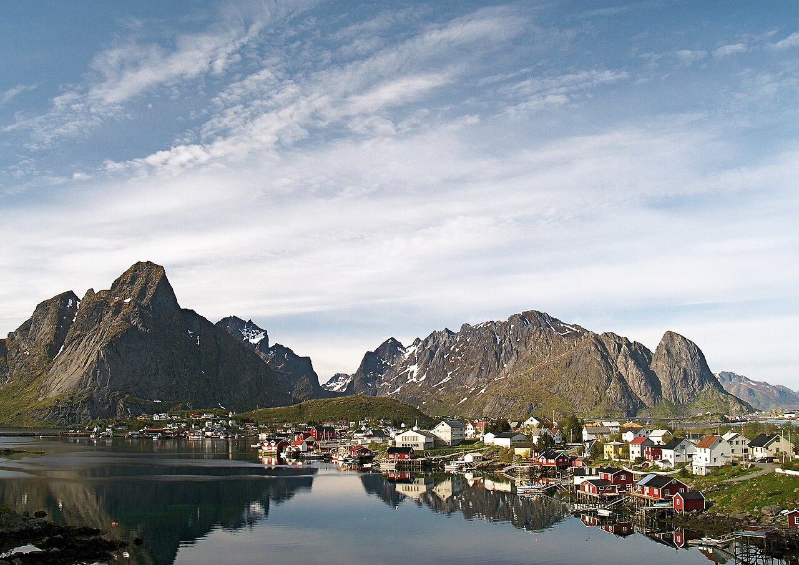

Норвегия

Норвегия — там, где заканчиваются дороги и начинаются фьорды: скалы уходят в воду отвесно, вода в них такого сине-зелёного оттенка, что фотоаппарат отказывается это признавать. Лофотены — архипелаг с хижинами-рорбу на сваях, где кофе на террасе с видом на море входит в программу, а тресковые гирлянды вялятся под крышами, как флаги рыбацкой цивилизации. Фломская железная дорога — лучший первый фьорд: поезд карабкается вверх через водопады и туннели, а плато в конце кажется отдельной страной. Осенью и зимой — сияние: с сентября по март, бесплатное и щедрое, как полярная ночь; слой за слоем одевайтесь, погода меняется быстрее, чем вы выбираете объектив. Осло — спокойный финал: по крыше оперного театра можно ходить, а в музее Фрама — зайти в настоящий борт полярного судна. Дорого — да. Но это цена за ландшафт, который не нарисован, а построен тектоникой плит, и он не продаётся нигде ещё.
Что знать перед поездкой
- Сияние активнее с сентября по март
- Фломская железная дорога — лучший первый фьорд
- Слои одежды: погода меняется за час